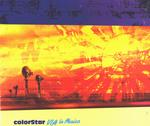

| Artist: | ColorStar |
| Title: | Via La Musica |
| Label: | Stereo Periferic BGCD 085 |
| Length(s): | ?? minutes |
| Year(s) of release: | 2001 |
| Month of review: | [02/2002] |
| 1) | Morning Call | 7.00 |
| 2) | Budapest Win-a-trip | 4.49 |
| 3) | Hue & Cry | 4.18 |
| 4) | Aalomadalom | 9.40 |
| 5) | Petite Adéle | 7.00 |
| 6) | Control The Moment | 7.50 |
| 7) | Waterfront | 8.18 |
| 8) | Midnight Take-off | 6.58 |
Budapest Win-a-trip is rather jazzy and percussive. It is somewhat more up-beat than it predecessor and again sounds quite groovy. Hue & Cry follows up with lots of effects and sounds quite intricate. A waterfall of piano playing and vocal effects complete the picture.
Aalomadalom (sounds almost Finnish) is a bit too easy-going for my tastes and features the sounds of horses and jumping beans. Later we get more beat, almost disco it seems. Lots of percussion and chanting here.
Petite Adéle combines the twang of the country guitar with Indian influences through sitar and vocals. Psychedelic bands often include a reggae influences. On this album it is Control The Moment. My opinion of these tracks is that usually the end result is something that is sustained too long and as a consequence rather boring. It is not different here.
Waterfront is the first real "song" on the album with a good vocal melody. It shows what the band is capable off when they would decide to throw off the psyche and continue more within the framework of the song. The song is somewhat melancholic one and is both melodic and percussive.
Midnight Take-Off closes down the album with a warm sound, but also a bit of the King Crimson neuroticism in it.